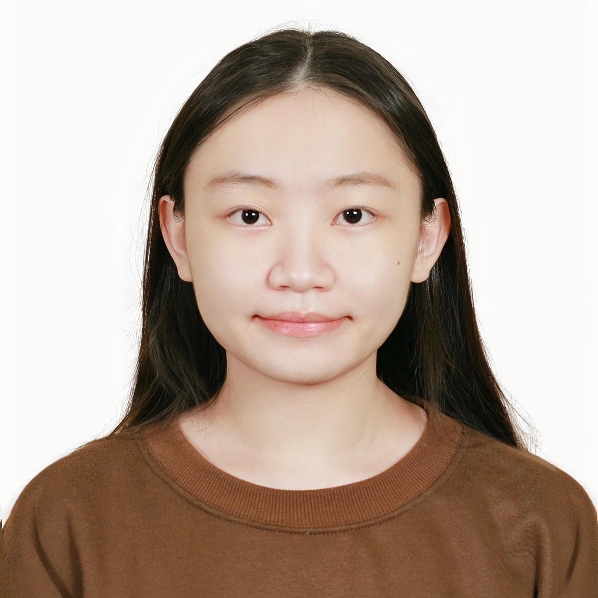

Cheng-Yun Wu (Yun)
Master Student | Research Assistant
📞 +886-9-55924587
📧 yunwcy.im@gmail.com
📍 New Taipei City, Taiwan
Education
- Master: Institute of Information Management, National Taipei University (2024/09 - 2026/06)
- Bachelor: Department of Information Management, Ming Chuan University (2019/09 - 2023/06)
- High School: Taipei JingMei Girls High School (2016/09 - 2019/06)
Skills
- Python
- Java
- Chatbot
- Large language model (LLM)
- Retrieval-augmented generation (RAG)
Language
- Chinese
- English
About me
Hi, I'm Cheng-Yun Wu (Yun), a master's student focusing on AI and multimodal technologies. I work as a research assistant at IFIT Lab, with research interests in AI-driven dialogue systems.
ExperienceFor more details
-
Research Project:
-
Digital Support, Unimpeded Communication: AI-assisted Communication Assistive Devices
Sub-project 3: Multimodal Cross-lingual Task-Oriented Dialogue System
National Science and Technology Council (NSTC 113-2425-H-305-003-), 2023/05/01 - 2026/04/30
Position: Research Assistant, 2024/09 - Now
-
Digital Support, Unimpeded Communication: AI-assisted Communication Assistive Devices
-
Conferences:
- 2025 International Conference on Information Management, New Taipei, Taiwan, 2025/05/16
- NTCIR-18, Tokyo, Japan, 2025/06/10-13
-
Competitions:
- 2025 Best AI Awards, Final contest
- 2025 The 3rd NTPU AI Smart Application Innovation Competition: Practical Division, Excellence Award
- 2025 The 10th TSC Marketing Symposium: AI Application Marketing Competition, Honorable Mention